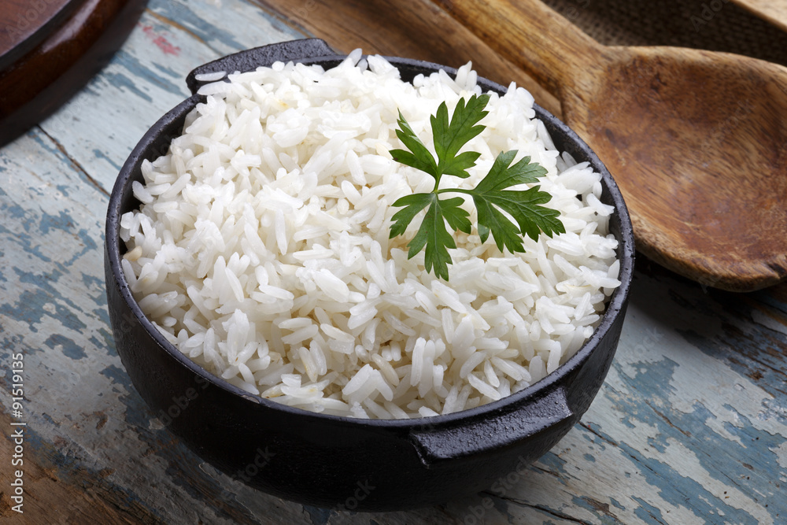

Rice

Plain white rice, in its simplest form, is a cooked dish made solely from white rice grains and water.
Ingredients:
- Rice
- Water
- Salt (optional)
Instructions:
- Rinse the rice in a fine-mesh strainer until the water runs clear.
- In a pot, combine the rice with water (use a 1:2 ratio of water to rice). Add salt if desired.
- Bring to a boil, then reduce heat to low, cover the pot tightly, and simmer for 15-20 minutes, or until the rice is cooked through and all the water is absorbed.
- Remove from heat and fluff the rice with a fork before serving.